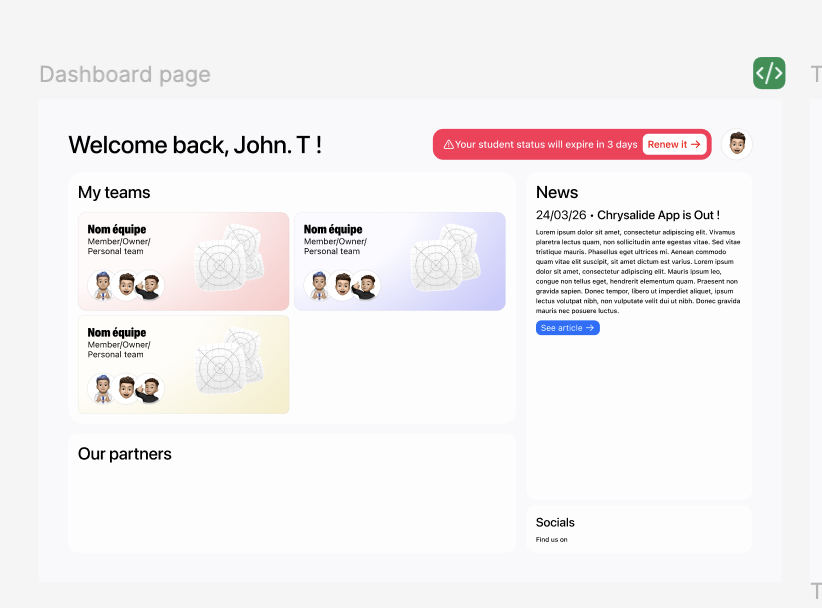
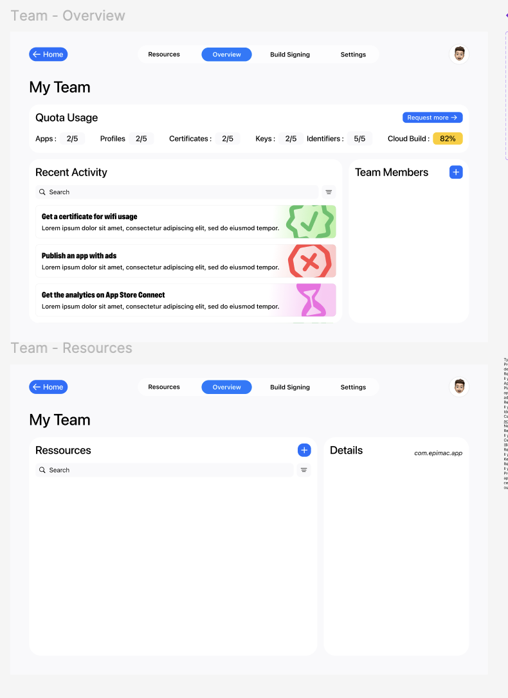

The goal is to redesign Epimac's intranet. The old one was
broken in places, ugly in others, and nobody actually wanted
to open it. So we're starting over.
The brief is simple. Make a tool members will actually use
to manage their Apple developer team work: their teams,
their resources, their quotas, the news from the club.

dashboard, the landing page
The dashboard is the front door. A short greeting, the teams
you're part of, a sidebar with club news and a banner that
reminds you when your student status is about to expire.
Partners and socials sit at the bottom so they stay out of
the way.
Each team card carries the team name, your role inside it
(owner, member, personal team).

team views, overview and resources
Click into a team and the layout splits in two. Overview
surfaces what matters day to day: quota usage (apps,
profiles, certificates, keys, identifiers, cloud build) and
a recent-activity feed of what teammates have been up to.
Resources is the working area. A searchable list of
everything the team owns, with a details panel that opens
whatever you select. Build Signing and Settings tabs live in
the same shell.